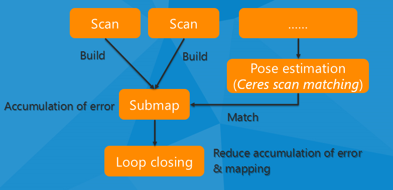
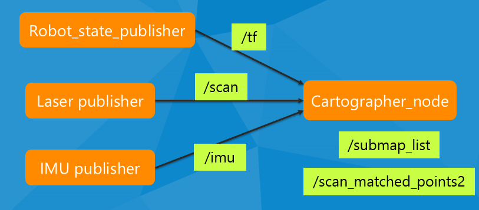
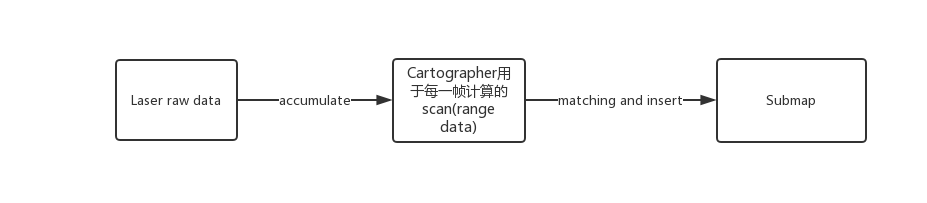
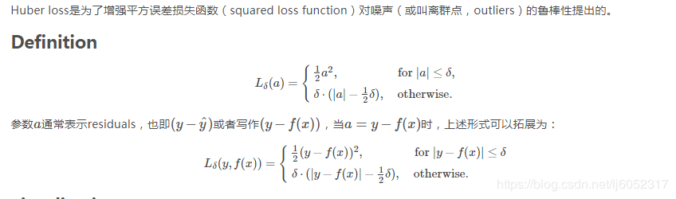
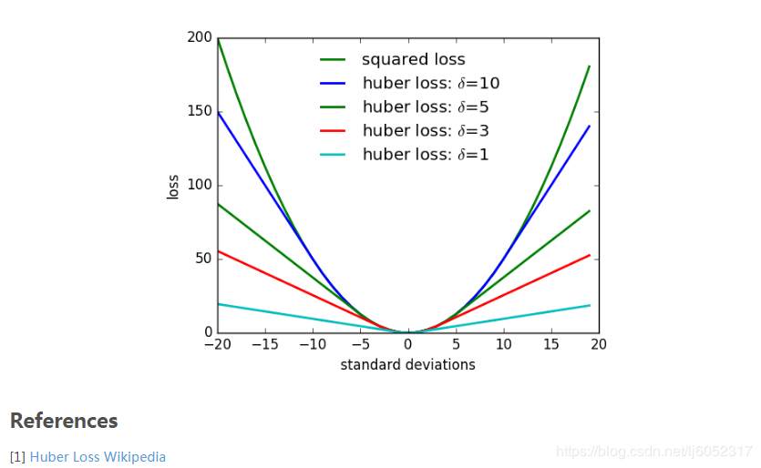

本篇博客的目的是记录自己在实物机器人上调试 Cartographer 算法的过程中，参考的资料和结合部分代码，一些自己总结的内容。Cartographer 是 Google 开源的一个激光 SLAM 项目，有着非常惊艳的工程实现。
本文参考cartographer官方文档。
首先要明确的一点，Cartographer的官方文档也提到，这个简介仅仅给出直觉概述层面上的Cartographer的不同子系统的介绍和配置说明。如果为了更详细的描述和更严谨的表达，应该去看Cartographer的Paper。虽然Paper中仅仅给出了2D SLAM的重要概念的严格表达，但这些概念可以非常自然的推广到3D。
Paper：
W. Hess, D. Kohler, H. Rapp, and D. Andor, Real-Time Loop Closure in 2D LIDAR SLAM, in Robotics and Automation (ICRA), 2016 IEEE International Conference on. IEEE, 2016. pp. 1271–1278.
Cartographer Algorithm walkthrough for tuning
cartographer基本思路简介
这篇CSDN博客说的挺简洁，但是现在必须成VIP才能看的文章了，有点醉…主要两张图如下：
-
算法的基本思路

-
基本的ROS框架如下，当然可以有更多类型的输入，比如里程计信息等。

Cartographer它的设计目标是实现低计算资源消耗，实时优化，不追求高精度（可以达到r=5cm级别的精度） Paper中说了，它主要的贡献并不在算法层面，而是提供了工程上高效率、Robust的代码实现。

Cartographer可以看做两个独立但有关系的子系统，Local SLAM 和 Global SLAM。
-
Local SLAM可以被看做是前端(local trajectory builder)，任务是建立一个个的submap。各个submap是本地一致的，但是会慢慢的漂移。Local SLAM相关的配置文件是trajectory_builder_2d.lua或trajectory_builder_3d.lua。后面用TRAJECTORY_BUILDER_nD表示相通的配置options。
-
Golbal SLAM是后端，单开了一个线程运行在后端，主要作用是寻找 loop closure constraints(回环约束)。通过scans(gathered in nodes) 与submaps进行matching的方法来工作。并且可以结合其他传感器的数据来进一步提高精度，来确定一致性最强的Global optimization 方案。3D SLAM中还会尝试去估计重力方向。相关配置文件是pose_graph.lua。
TODO:
- .lua修改为本地gitlab仓库链接
- Global中的scans和nodes的关系？scans(gathered in nodes)
总的来说，Local SLAM 的主要工作是生成更好的 submaps，Global SLAM的工作是将这些 submaps 更好的结合起来。
Input Process
Laser Data
注意！Cartographer中关于距离的参数的单位均为米/m
由于在实际运用的过程中，雷达在机器人身上的安装位置导致雷达被机器人身上其他部件挡了、或者雷达自身落灰了，或者一些从不期望的来源得到的最远的测量值（比如反射、或者自身传感器噪声）等，都是SLAM过程中所不期望的。对于这些噪声，Cartographer starts by applying a bandpass filter and only keeps range values between a certain min and max range。下面的这俩值根据你机器人和雷达的实际情况来确定。
这两个参数就是雷达扫描数据的距离范围。参数为下面两个。
TRAJECTORY_BUILDER_nD.min_range
TRAJECTORY_BUILDER_nD.max_rangeCartographer会用TRAJECTORY_BUILDER_2D.missing_data_ray_length的值来替换实际大于 TRAJECTORY_BUILDER_nD.max_range 的ranges。
TODO:
考虑根据具体的自己机器人的形状和雷达的实际效果，确定更好的卡值的方法？但又仔细一想好像又没这必要。
TRAJECTORY_BUILDER_2D.missing_data_ray_length参数的说法还是有点迷…代码中是这样写的:
cartographer/mapping/internal/2d/local_trajectory_builder_2d.hline: 170-189// Drop any returns below the minimum range and convert returns beyond the // maximum range into misses. for (size_t i = 0; i < synchronized_data.ranges.size(); ++i) { const Eigen::Vector4f& hit = synchronized_data.ranges[i].point_time; const Eigen::Vector3f origin_in_local = range_data_poses[i] * synchronized_data.origins.at(synchronized_data.ranges[i].origin_index); const Eigen::Vector3f hit_in_local = range_data_poses[i] * hit.head<3>(); const Eigen::Vector3f delta = hit_in_local - origin_in_local; const float range = delta.norm(); if (range >= options_.min_range()) { if (range <= options_.max_range()) { accumulated_range_data_.returns.push_back(hit_in_local); } else { accumulated_range_data_.misses.push_back( origin_in_local + options_.missing_data_ray_length() / range * delta); } } }具体待跑起来后分析实际数据
如果将 3D 雷达用在 2D SLAM的话,提供一个"截断"的参数,就是把一定高度范围内的扫描点映射到 2D 的一个平面上。
TRAJECTORY_BUILDER_2D.max_z
TRAJECTORY_BUILDER_2D.min_z一组激光雷达的距离数据是一段时间内测量出来的，而这一段时间内机器人是运动的，这就导致了激光数据会产生畸变。这些距离数据被封装到一帧一帧的ROS message中，每一帧都带有时间戳信息，Cartographer会把多(>=1)帧集合(accumulate)成一个大帧作为算法的输入。Cartographer认为这每一帧都是独立的，以帧为单位补偿运动导致的激光雷达数据产生的畸变，然后再把这些帧集合到一块去。所以当然Cartographer接收到的数据帧的频率越高，Cartographer的补偿效果越好，算法的输入数据质量越高。
所以TRAJECTORY_BUILDER_nD.num_accumulated_range_data参数的意义就是集合多少帧运动补偿后形成算法输入的大数据帧。(该参数要根据实际雷达的数据采集频率和每一帧数据的扫描范围来定，比如Rplidar A3的一帧数据是采样一圈；而VLP-16的一帧数据可以调成一个udp数据包而不是一圈数据，并且这样更好，因为转一圈也是需要时间的，这样就可以把一圈内的数据也做了运动补偿)
相关代码(cartographer/mapping/internal/2d/local_trajectory_builder_2d.h line:142-205)：
if (num_accumulated_ == 0) {
accumulation_started_ = std::chrono::steady_clock::now();
}
...
if (num_accumulated_ == 0) {
// 'accumulated_range_data_.origin' is uninitialized until the last
// accumulation.
accumulated_range_data_ = sensor::RangeData{{}, {}, {}};
}
// Drop any returns below the minimum range and convert returns beyond the
// maximum range into misses.
for (size_t i = 0; i < synchronized_data.ranges.size(); ++i) {
...
if (range >= options_.min_range()) {
if (range <= options_.max_range()) {
accumulated_range_data_.returns.push_back(hit_in_local);
} else {
accumulated_range_data_.misses.push_back(
origin_in_local +
options_.missing_data_ray_length() / range * delta);
}
}
}
++num_accumulated_;
if (num_accumulated_ >= options_.num_accumulated_range_data()) {
num_accumulated_ = 0;
const transform::Rigid3d gravity_alignment = transform::Rigid3d::Rotation(
extrapolator_->EstimateGravityOrientation(time));
// TODO(gaschler): This assumes that 'range_data_poses.back()' is at time
// 'time'.
accumulated_range_data_.origin = range_data_poses.back().translation();
return AddAccumulatedRangeData(
time,
TransformToGravityAlignedFrameAndFilter(
gravity_alignment.cast<float>() * range_data_poses.back().inverse(),
accumulated_range_data_),
gravity_alignment);
}Voxel Filter
较近的表面(如路面)经常扫描得到更多的points,而远处的物体的points经常比较稀少. 为了降低计算量, 需要对点云数据进行下采样, 简单的随机采样仍然会导致低密度区的点更少,而高密度区的点仍然比较多.因此cartographer 采用 voxel_filter (体素滤波)的方法。通过输入的点云数据创建一个三维体素栅格（可把体素栅格想象为微小的空间三维立方体的集合），然后在每个体素（即，三维立方体）内，用体素中所有点的重心来近似显示体素中其他点，这样该体素就内所有点就用一个重心点最终表示，对于所有体素处理后得到过滤后的点云。TRAJECTORY_BUILDER_nD.voxel_filter_size即为立方体的大小。如果立方体较小的话会导致更密集的数据，所耗的计算量更大。而较大的话可能会导致数据丢失但是计算速度会更快。
在提供了定大小的 voxel_filter, Cartographer还提供了一个 adaptive_voxel_filter, adaptive_voxel_filter 可以在最大边长TRAJECTORY_BUILDER_nD.*adaptive_voxel_filter.max_length的限制下优化确定voxel_filter_size来实现目标的points数TRAJECTORY_BUILDER_nD.*adaptive_voxel_filter.min_num_points 。
官方给的默认配置：
trajectory_builder_2d.lua
TRAJECTORY_BUILDER_2D = {
...
voxel_filter_size = 0.025,
adaptive_voxel_filter = {
max_length = 0.5,
min_num_points = 200,
max_range = 50.,
},
...
}trajectory_builder_3d.lua
TRAJECTORY_BUILDER_3D = {
...
voxel_filter_size = 0.15,
high_resolution_adaptive_voxel_filter = {
max_length = 2.,
min_num_points = 150,
max_range = 15.,
},
low_resolution_adaptive_voxel_filter = {
max_length = 4.,
min_num_points = 200,
max_range = MAX_3D_RANGE,
},
...
}IMU Data
IMU对于SLAM可以提供非常有用的信息，Cartographer 直接利用IMU所提供的三轴线加速度与角速度信息，可以提供一个较为精确的重力方向，以及提供带有噪声但是整体方向大概正确的关于机器人旋转的信息。为了滤掉IMU的噪声，gravity is observed over a certain amount of time。在2D SLAM 中，可以做到无外界的一些补充信息来源而实时处理数据，所以 2D SLAM 可以选择是否使用 IMU 的消息。但是在 3D SLAM 中需要提供 IMU 数据作判断scans方向的先验，可以大大降低 scan 匹配的复杂性。
cartographer中关于时间的参数单位均为s(秒).
TRAJECTORY_BUILDER_nD.use_imu_data = true
TRAJECTORY_BUILDER_nD.imu_gravity_time_constant = 10.0下文 imu 数据还在 Global optimization 中的应用.
Local SLAM
Once a scan has been assembled and filtered from multiple range data, it is ready for the local SLAM algorithm. Local SLAM可以利用来自与pose extrapolator的输出信息作为一个先验，把一帧新的scans通过scan matching的方法插入到当下的submap中。使用pose extrapolator的idea是，通过除了激光雷达以外的传感器的数据来预测当前scan插入到submap的位置，比如里程计信息、IMU等。
Two scan matching strategies
CeresScanMatcher 以及 RealTimeCorrelativeScanMatcher
-
CeresScanMatcher 利用上面说的先验 initial guess ,寻找 scan 与当前的 submap 最匹配的位置。通过对 submap 进行插值然后与 scan 进行对齐（It does this by interpolating the submap and sub-pixel aligning the scan）。这种做法比较快速，但是无法修复远大于子图分辨率的误差。如果你的传感器的设置与累积的那个时间区间都是合理的话,仅仅使用 CeresScanMatcher 通常是最好的选择。
CeresScanMatcher 可以为每一个输入源配置一个权重weight，权重就是对其数据的信任度，可以把它视为静态协方差。这个weight是无量纲的，并且是不能相互比较的。weight越大，Cartographer在进行scan matching的时候就对他更关注。数据来源可以包括 occupied space (points from the scan), translation and rotation from the pose extrapolator (or
RealTimeCorrelativeScanMatcher)TRAJECTORY_BUILDER_3D.ceres_scan_matcher.occupied_space_weight TRAJECTORY_BUILDER_3D.ceres_scan_matcher.occupied_space_weight_0 TRAJECTORY_BUILDER_3D.ceres_scan_matcher.occupied_space_weight_1 TRAJECTORY_BUILDER_nD.ceres_scan_matcher.translation_weight TRAJECTORY_BUILDER_nD.ceres_scan_matcher.rotation_weightIn 3D, the
occupied_space_weight_0andoccupied_space_weight_1parameters are related, respectively, to the high resolution and low resolution filtered point clouds.CeresScanMatcher的名字来源于Ceres Solver。这个scan matching问题被建模为一个最小二乘问题，两帧间的motion是待优化变量。（GN等方法）Ceres optimizes the motion using a descent algorithm for a given number of iterations. Ceres can be configured to adapt the convergence speed to your own needs.
TRAJECTORY_BUILDER_nD.ceres_scan_matcher.ceres_solver_options.use_nonmonotonic_steps TRAJECTORY_BUILDER_nD.ceres_scan_matcher.ceres_solver_options.max_num_iterations TRAJECTORY_BUILDER_nD.ceres_scan_matcher.ceres_solver_options.num_threadsuse_nonmonotonic_steps这个暂时还未深究，参见Ceres-Solver官方文档讲解官方给的默认配置：
trajectory_builder_2d.luaTRAJECTORY_BUILDER_2D = { ... ceres_scan_matcher = { occupied_space_weight = 1., translation_weight = 10., rotation_weight = 40., ceres_solver_options = { use_nonmonotonic_steps = false, max_num_iterations = 20, num_threads = 1, }, }, ... } -
RealTimeCorrelativeScanMatcher 在你比较不信任你的其他传感器或者不存在其他的传感器的情况下可以启用。它的做法类似于回环检测中的做法将 scan 与当前 submap 进行 match。Best match 然后被用作 CeresScanMatcher 的先验。这种 match 的方式对计算资源要求较高，并且开了后，就忽略了其他传感器的数据。但这种做法在 feature rich 的环境中的鲁棒性非常好。
同样 RealTimeCorrelativeScanMatcher 也可以根据对 sensors 的信任度进行配置(即可以配置不同权重/置信度/weight)。它的工作原理是在一个搜索窗口中(搜索窗口的大小由搜索的最大距离半径和角度范围来指定)。在此窗口中进行 scan match 的时候,可以为 translation 和 rotation 选择不同的权重。
TODO
例如当已知机器人不会旋转过多的话,就可以改变对应 weight。
所以这个weight到底是指？具体还是看代码吧
TRAJECTORY_BUILDER_nD.use_online_correlative_scan_matching TRAJECTORY_BUILDER_nD.real_time_correlative_scan_matcher.linear_search_window TRAJECTORY_BUILDER_nD.real_time_correlative_scan_matcher.angular_search_window TRAJECTORY_BUILDER_nD.real_time_correlative_scan_matcher.translation_delta_cost_weight TRAJECTORY_BUILDER_nD.real_time_correlative_scan_matcher.rotation_delta_cost_weight官方给的默认配置：
trajectory_builder_2d.luaTRAJECTORY_BUILDER_2D = { ... use_online_correlative_scan_matching = false, real_time_correlative_scan_matcher = { linear_search_window = 0.1, angular_search_window = math.rad(20.), translation_delta_cost_weight = 1e-1, rotation_delta_cost_weight = 1e-1, }, ... }
motion_filter
为避免将过多的 scan 插入到 submap 里，当两个 scan 成功 match 后，会得到两个 match 之间的运动关系。当两者运动关系不明显的话,这个 match 结果就不会被插入到 submap 中去。这个操作通过运动滤波器中卡time,distance以及angle的阈值来实现。
TRAJECTORY_BUILDER_nD.motion_filter.max_time_seconds
TRAJECTORY_BUILDER_nD.motion_filter.max_distance_meters
TRAJECTORY_BUILDER_nD.motion_filter.max_angle_radians官方给的默认配置：
trajectory_builder_2d.lua
TRAJECTORY_BUILDER_2D = {
...
motion_filter = {
max_time_seconds = 5.,
max_distance_meters = 0.2,
max_angle_radians = math.rad(1.),
},
...
}Submap
当Local SLAM接收到一定数量的range data时可认为此时当前的submap被完成了，这个即由TRAJECTORY_BUILDER_nD.submaps.num_range_data参数来指定。Local SLAM的结果在时间上积累后会产生漂移误差，Global SLAM可以来fix这个误差。这个Submap必须足够的小从而可以认为它是局部正确的。但从另一方面来看，他又必须足够的大从而可以做回环。
TRAJECTORY_BUILDER_nD.submaps.num_range_data这里总结一下，雷达数据到建图的流程如下：

Submap 可以采用不止一种的数据结构来存储。但是现在大多都是采用的概率栅格地图（probability grids）的方式来存储。但是在2D中，还可以采用TSDF（Truncated Signed Distance Fields）地图类型。
TRAJECTORY_BUILDER_2D.submaps.grid_options_2d.grid_type概率栅格地图的资料很多，去搜一下即可。这里就贴文档原句了。Odds are updated according to “hits” (where the range data is measured) and “misses” (the free space between the sensor and the measured points)。可以根据对被占据occupied和free space的雷达数据的置信度，加减hits和misses的weight值（Both hits and misses can have a different weight in occupancy probability calculations giving more or less trust to occupied or free space measurements）。
TODO
这里为啥分了两个…是因为不同的地图类型吗
TRAJECTORY_BUILDER_2D.submaps.range_data_inserter.probability_grid_range_data_inserter.hit_probability
TRAJECTORY_BUILDER_2D.submaps.range_data_inserter.probability_grid_range_data_inserter.miss_probability
TRAJECTORY_BUILDER_3D.submaps.range_data_inserter.hit_probability
TRAJECTORY_BUILDER_3D.submaps.range_data_inserter.miss_probability官方给的默认配置：
trajectory_builder_2d.lua
TRAJECTORY_BUILDER_2D = {
...
submaps = {
num_range_data = 90,
grid_options_2d = {
grid_type = "PROBABILITY_GRID",
resolution = 0.05,
},
range_data_inserter = {
range_data_inserter_type = "PROBABILITY_GRID_INSERTER_2D",
probability_grid_range_data_inserter = {
insert_free_space = true,
hit_probability = 0.55,
miss_probability = 0.49,
},
},
},
...
}2D SLAM中一个submap仅有一个栅格地图（probability grid）被存储。在3D SLAM中因为scan matching性能的原因，维护了两个hybrid probability grid (the term “hybrid” only refers to an internal tree-like data representation and is abstracted to the user)，并分别应用了一个adaptive_voxel_filter。：
- 一个是用于远距离测量的低分辨率 hybrid grid
- 另一个是用于近距离测量的高分辨率 hybrid grid
Scan match 首先将远处的低分辨率的点云与低分辨率 hybrid grid 对齐，然后通过高分辨率的近处点云与高分辨率的hybrid grid对齐来refine pose。
TRAJECTORY_BUILDER_2D.submaps.grid_options_2d.resolution
TRAJECTORY_BUILDER_3D.submaps.high_resolution
TRAJECTORY_BUILDER_3D.submaps.low_resolution
TRAJECTORY_BUILDER_3D.high_resolution_adaptive_voxel_filter.max_range
TRAJECTORY_BUILDER_3D.low_resolution_adaptive_voxel_filter.max_rangeTODO
上面的adaptive_voxel_filter.max_range是指的近和远的距离的界定吗
Cartographer ROS提供了一个可以在rviz中可视化submaps的插件。可以选择submap通过他们的id。3D SLAM中rviz仅仅显示3D hybrid probability grids的2D 投影（in grayscale）。通过Rviz左侧栏可以切换high resolution hybrid grids来看。
trajectory_builder_3d.lua
TRAJECTORY_BUILDER_3D = {
...
submaps = {
high_resolution = 0.10,
high_resolution_max_range = 20.,
low_resolution = 0.45,
num_range_data = 160,
range_data_inserter = {
hit_probability = 0.55,
miss_probability = 0.49,
num_free_space_voxels = 2,
},
},
...
}Global SLAM
当Local SLAM成功生成submaps的同时，在后端运行着一个全局的优化程序（sparse pose adjustment）。通过调整submap的位置来保持全局一致。然后还会考虑回环优化。
每当POSE_GRAPH.optimize_every_n_nodes数目的node被插入地图的时候运行一次optimization。
通常先将POSE_GRAPH.optimize_every_n_nodes 置零来关闭Global SLAM，然后专心的来调Local SLAM。这通常是调试Cartographer的第一步。
我们把估计出来的一个Scan的绝对位姿称为trajectory上的一个节点(Node)，那么节点与节点的彼此之间的相对位姿就可以称为一个约束(Constraint)。参考链接
上面的说法的确比较容易理解，并且做Pose Graph的确仅依赖与位姿。但是通过代码来看，这个Node所带的信息不止有Scan的绝对位姿（gravity aligned，用代码中的注释：Transform to approximately gravity align the tracking frame as determined by local SLAM.），还带有gravity aligned的PointCloud。
trajectory_node_data.proto文件：
syntax = "proto3"; package cartographer.mapping.proto; import "cartographer/sensor/proto/sensor.proto"; import "cartographer/transform/proto/transform.proto"; // Serialized state of a mapping::TrajectoryNode::Data. message TrajectoryNodeData { int64 timestamp = 1; transform.proto.Quaterniond gravity_alignment = 2; sensor.proto.CompressedPointCloud filtered_gravity_aligned_point_cloud = 3; sensor.proto.CompressedPointCloud high_resolution_point_cloud = 4; sensor.proto.CompressedPointCloud low_resolution_point_cloud = 5; repeated float rotational_scan_matcher_histogram = 6; transform.proto.Rigid3d local_pose = 7; }cartographer/mapping/trajectory_node.h文件：
struct TrajectoryNode { struct Data { common::Time time; // Transform to approximately gravity align the tracking frame as // determined by local SLAM. Eigen::Quaterniond gravity_alignment; // Used for loop closure in 2D: voxel filtered returns in the // 'gravity_alignment' frame. sensor::PointCloud filtered_gravity_aligned_point_cloud; // Used for loop closure in 3D. sensor::PointCloud high_resolution_point_cloud; sensor::PointCloud low_resolution_point_cloud; Eigen::VectorXf rotational_scan_matcher_histogram; // The node pose in the local SLAM frame. transform::Rigid3d local_pose; }; common::Time time() const { return constant_data->time; } // This must be a shared_ptr. If the data is used for visualization while the // node is being trimmed, it must survive until all use finishes. std::shared_ptr<const Data> constant_data; // The node pose in the global SLAM frame. transform::Rigid3d global_pose; };
后端是一个Pose Graph的优化。通过调整nodes和submaps之间的约束关系来优化最终的图。Constraints直觉上来感觉就是由一根根小绳子将所有的nodes给捆起来，pose adjustement就是把这些小绳子给全部接起来。这也就是所谓的Pose Graph。
Rviz中可以对这些Constraints进行可视化，这对调试Global SLAM来说是非常方便的。
还可以开启
POSE_GRAPH.constraint_builder.log_matches来看关于constraints builder的report。
约束分为非全局约束与全局约束：
- 非全局约束也被称作(也被称作是 inter submaps constraints)。它在一条trajectory上离得近的 nodes 之间被自动构建。直觉上来看，这些约束使得trajectory的局部结构是一致的。
- 全局约束(也被称作是loop closure constraints或者intra submaps contraints)的运行：通常是在一个新的new submap和之前的nodes之间进行搜索，当满足空间上足够的相近（被一个search window限定）以及一个极强的scan match结果。直观的来讲,相当于在两个绳子(约束)之间打一个结点使得两根绳子里的更近。
POSE_GRAPH.constraint_builder.max_constraint_distance
POSE_GRAPH.fast_correlative_scan_matcher.linear_search_window
POSE_GRAPH.fast_correlative_scan_matcher_3d.linear_xy_search_window
POSE_GRAPH.fast_correlative_scan_matcher_3d.linear_z_search_window
POSE_GRAPH.fast_correlative_scan_matcher*.angular_search_window官方默认配置：
pose_graph.lua
POSE_GRAPH = {
...
constraint_builder = {
max_constraint_distance = 15.,
...
fast_correlative_scan_matcher = {
linear_search_window = 7.,
angular_search_window = math.rad(30.),
...
},
fast_correlative_scan_matcher_3d = {
...
linear_xy_search_window = 5.,
linear_z_search_window = 1.,
angular_search_window = math.rad(15.),
...
},
}
...
}// TODO ICRA RM两台机器人，这一点可以考虑
Cartographer不止可以单单在单个轨迹上loop closure，还可以在多个机器人的多个轨迹上align。这个部分的文档 the parameters related to “global localization” out of the scope of this document.
为了限制constraints的数量（也是降低计算力），Cartographer对这些node做了一个下采样，通过POSE_GRAPH.constraint_builder.sampling_ratio参数来控制。下采样过度会导致约束缺失以及不容易进行loop closure，下采样力度过小会导致Global SLAM的运行速度过慢以及不能实时的loop closure。
官方默认配置：
pose_graph.lua
POSE_GRAPH = {
...
constraint_builder = {
sampling_ratio = 0.3,
...
}
...
}当一个node和一个submap进行constraint building的时候，通过的是一个叫做FastCorrelativeScanMatcher的机制。这个scan matcher是Cartographer的独创并且使得real-time loop closures scan matching成为可能。它引入了分支界限法（Branch and bound），可以在不同分辨率的地图网格上进行工作并且非常有效的去除误匹配。关于这个在Cartographer的论文中被详细描述了。所用的搜索树的深度是可以被控制的。
POSE_GRAPH.constraint_builder.fast_correlative_scan_matcher.branch_and_bound_depth
POSE_GRAPH.constraint_builder.fast_correlative_scan_matcher_3d.branch_and_bound_depth
POSE_GRAPH.constraint_builder.fast_correlative_scan_matcher_3d.full_resolution_depth官方默认配置：
pose_graph.lua
POSE_GRAPH = {
...
constraint_builder = {
max_constraint_distance = 15.,
...
fast_correlative_scan_matcher = {
...
branch_and_bound_depth = 7,
},
fast_correlative_scan_matcher_3d = {
...
branch_and_bound_depth = 8,
full_resolution_depth = 3,
...
},
}
...
}一旦FastCorrelativeScanMatcher达到一定的效果的时候（大于POSE_GRAPH.constraint_builder.min_score参数值），会把它再继续扔到CeresScanMatcher中来进行refine。
POSE_GRAPH.constraint_builder.min_score
POSE_GRAPH.constraint_builder.ceres_scan_matcher_3d
POSE_GRAPH.constraint_builder.ceres_scan_matcher官方默认配置：
pose_graph.lua
POSE_GRAPH = {
...
constraint_builder = {
...
min_score = 0.55,
...
ceres_scan_matcher = {
occupied_space_weight = 20.,
translation_weight = 10.,
rotation_weight = 1.,
ceres_solver_options = {
use_nonmonotonic_steps = true,
max_num_iterations = 10,
num_threads = 1,
},
},
ceres_scan_matcher_3d = {
occupied_space_weight_0 = 5.,
occupied_space_weight_1 = 30.,
translation_weight = 10.,
rotation_weight = 1.,
only_optimize_yaw = false,
ceres_solver_options = {
use_nonmonotonic_steps = false,
max_num_iterations = 10,
num_threads = 1,
},
},
},
...
}The Optimization Problem
当 Cartographer 运行优化问题的时候, Cartographer会通过多个残差项来对submaps进行调整。每一项残差通过被加权的cost function来计算（和SLAM中常见的做法一样）。这些每一个cost function取自多个数据源，全局(回环)约束global (loop closure) constraints，非全局(scan match)的约束the non-global (matcher) constraints，IMU 的测量值IMU acceleration and rotation measurements，local SLAM 的粗略的 pose 估计local SLAM rough pose estimations，外部的odometry 信息或者GPS等an odometry source or a fixed frame (such as a GPS system)。可通过下面项来进行配置：
POSE_GRAPH.constraint_builder.loop_closure_translation_weight
POSE_GRAPH.constraint_builder.loop_closure_rotation_weight
POSE_GRAPH.matcher_translation_weight
POSE_GRAPH.matcher_rotation_weight
POSE_GRAPH.optimization_problem.*_weight
POSE_GRAPH.optimization_problem.ceres_solver_optionsTODO ?
One can find useful information about the residuals used in the optimization problem by toggling
POSE_GRAPH.max_num_final_iterations
官方默认配置：
pose_graph.lua
POSE_GRAPH = {
...
constraint_builder = {
...
loop_closure_translation_weight = 1.1e4,
loop_closure_rotation_weight = 1e5,
...
},
...
matcher_translation_weight = 5e2,
matcher_rotation_weight = 1.6e3,
optimization_problem = {
huber_scale = 1e1,
acceleration_weight = 1e3,
rotation_weight = 3e5,
local_slam_pose_translation_weight = 1e5,
local_slam_pose_rotation_weight = 1e5,
odometry_translation_weight = 1e5,
odometry_rotation_weight = 1e5,
fixed_frame_pose_translation_weight = 1e1,
fixed_frame_pose_rotation_weight = 1e2,
log_solver_summary = false,
ceres_solver_options = {
use_nonmonotonic_steps = false,
max_num_iterations = 50,
num_threads = 7,
},
},
}在代码中，各种cost function的定义文件路径：

Cartographer提供了如下的cost functions：

全局优化时对于IMU数据的处理
Global optimization 对 imu 的 pose 信息提供了更多的灵活性。默认的 Ceres 会优化你 IMU 和 tracking frame 之间的外参。如果你不信任你的 imu 的数据的话, Ceres’ global optimization 的结果可以被记录然后来用来优化它俩之间的外参矩阵。如果 Ceres 不能够很好的优化 IMU 的 pose (它俩之间的外参矩阵)或者你非常信任你校准的它俩之间的外参矩阵的话，可以当做常量来使用自己标定的外参矩阵。
POSE_GRAPH.optimization_problem.log_solver_summary
POSE_GRAPH.optimization_problem.use_online_imu_extrinsics_in_3dHuber loss
在residuals中，采用Huber loss function 从而控制outliers的影响。Huber loss function的Huber scale是定的，通过下面参数指定。
POSE_GRAPH.optimization_problem.huber_scale这个值选的越大，潜在的outliers对系统的影响可能就越大。
huber loss 是一种优化平方loss的一种方式，使得loss变化没有那么大。


最终的全局优化
一旦 当 trajectory 完成后，Cartographer 经常会运行一个新的全局优化，迭代的次数通常比之前的要多得多。这样做的原因是要尽可能的去优化最终建图的效果，并且通常并没有实时性的要求。所以选择大量的迭代是正确的选择.
POSE_GRAPH.max_num_final_iterations附: PointCloud2消息类型的数据格式
手动解析点云数据时不可以直接解析，因为在field里是以二进制方式存储的，可以通过ros包里的工具来进行解析
本博客所有文章除特别声明外，均采用 CC BY-SA 4.0 协议 ，转载请注明出处！联系作者。